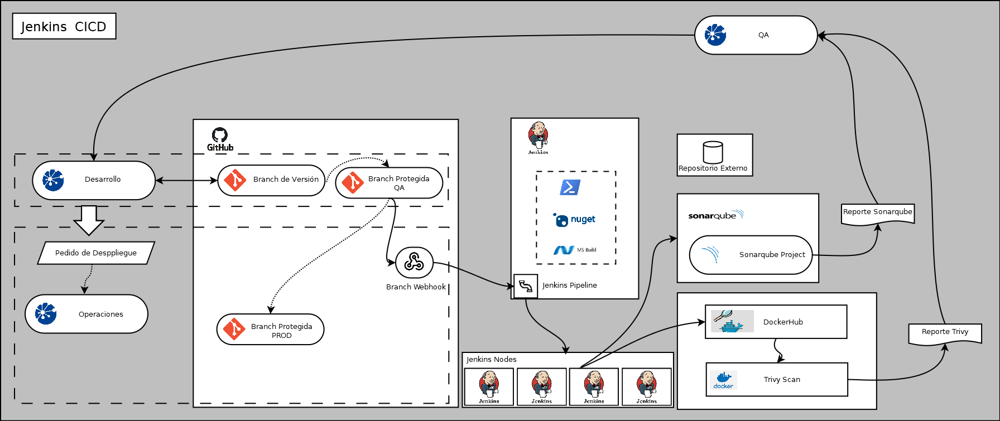

CI / CD para proyecto en Net Framework 4.8
2023

El proyecto consiste en la implementación de CI/CD para una solución desarrollada en Net Framework.
Para poder llevar a cabo la tarea se desplegó y configuro desde cero Jenkins, Sonarqube y se armaron scripts Powershell customizados
El SCM elegido fue Github pero, al ser un software desarrollado en Net Framework no fue posible implementar Github Actions. Se opto por hacerlo en Jenkins corriendo en Windows Server 2019.
Se utilizan los Pipelines de Jenkins en un Job declarativo trayendo el codigo desde Github y almacenándolo en un repositorio local en la VM de Jenkins.
Se envían mensajes a través de Telegram y Google Chat para informar el estado del despliegue.
El resultado de la compilación es enviado para su análisis a Sonarqube.
Los artefactos son almacenados en el repo local con información de hash de archivo (SHA256).
Tecnologías
- Powershell
- Azure VM
- Sonarqube
- WIndows Server
- Jenkins
- MarkDown
- Docker / Docker Scan / Snyk